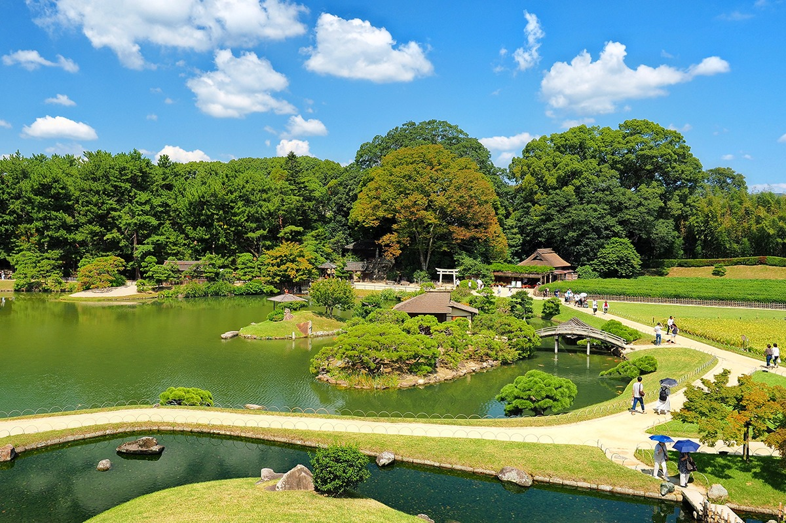
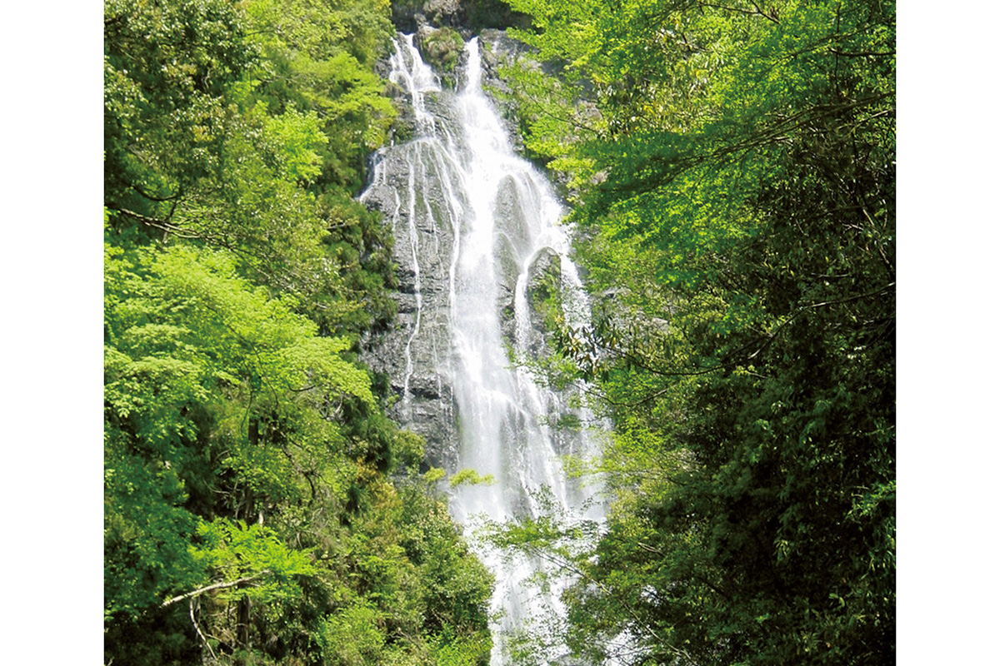
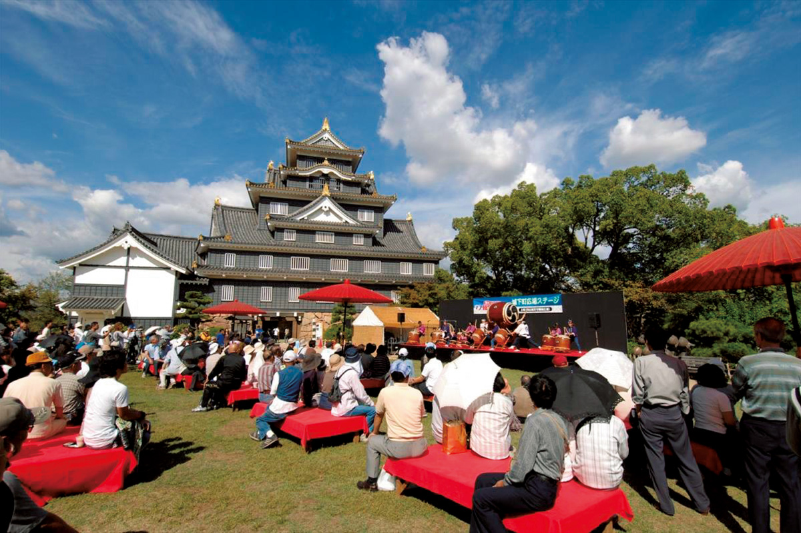
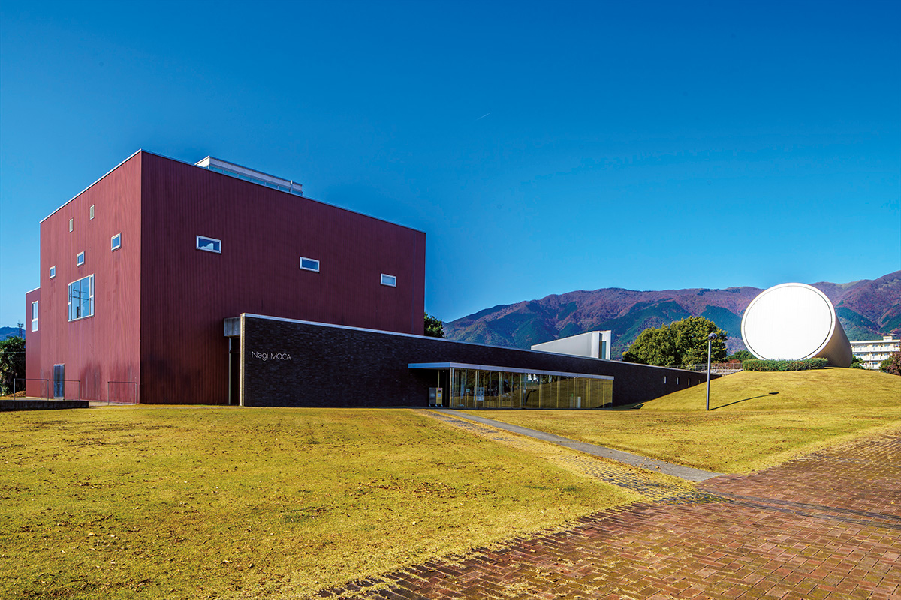
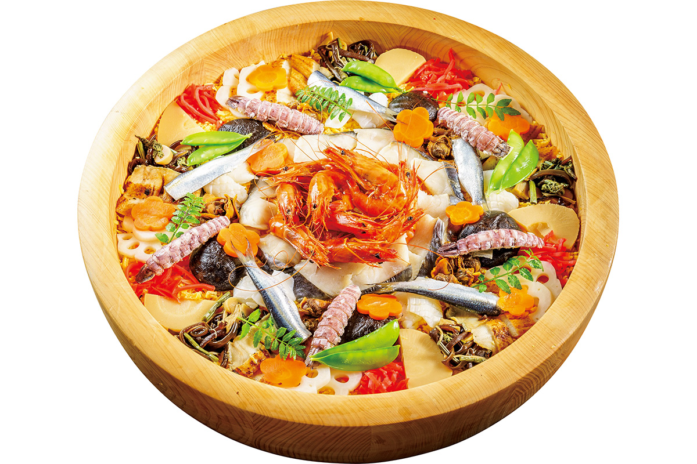
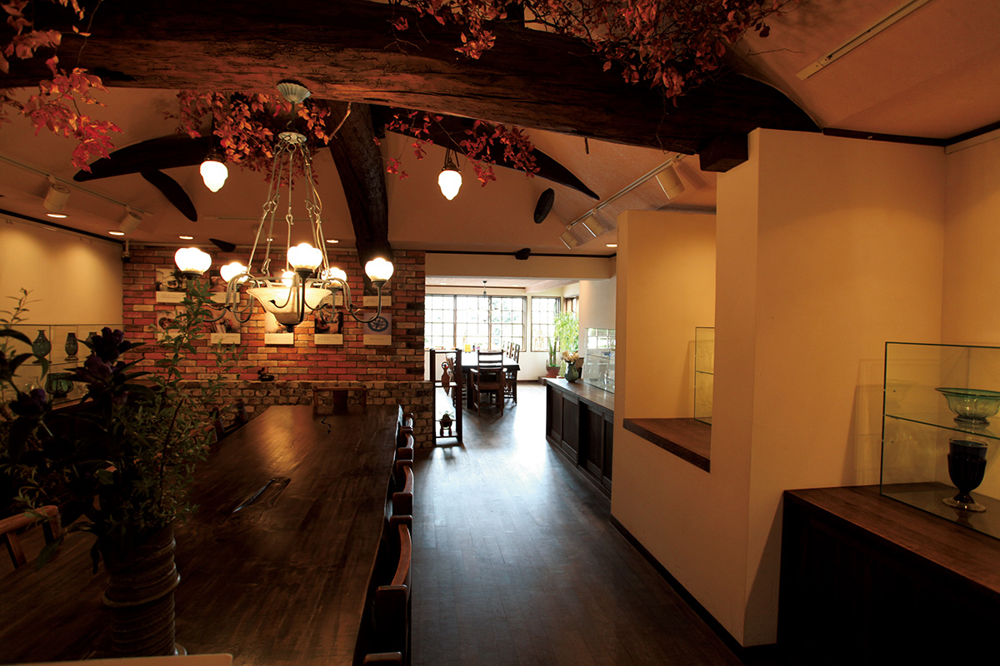
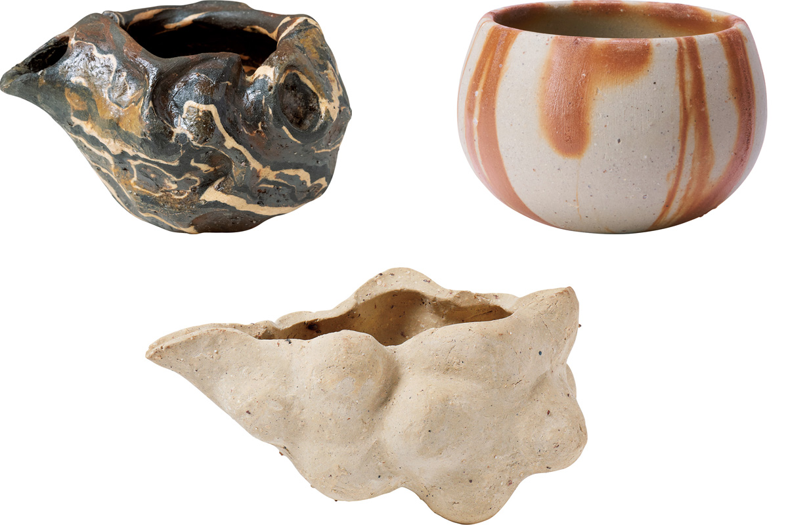
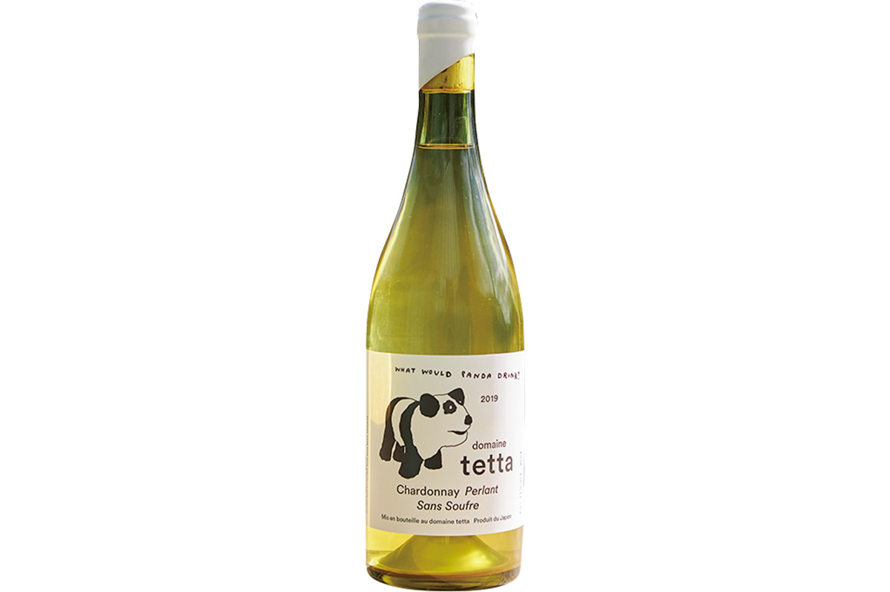
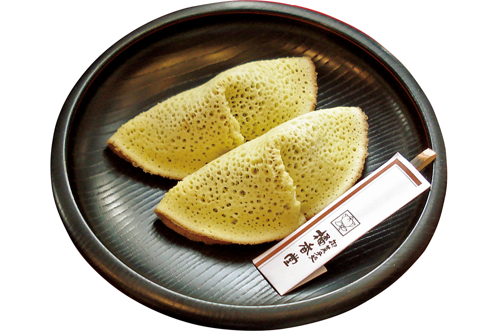

Префектура Окаяма
Окаяма: страна солнца, персиков и джинсов

Сад с большим прудом и арочным мостом: дорожки посыпаны светлым песком, а вдоль воды стоят сосны.
Здесь меньше всего дождливых дней в стране, здесь собирают почти весь виноград мускат и шьют джинсы на весь мир, а первая в мире тактильная плитка появилась именно тут. Рассказываем, за чем ехать в префектуру Окаяма.
О префектуре
Край, который зовут солнечной страной
Окаяма знаменита мягким климатом Внутреннего моря Сэто: дней, когда дождя выпадает больше миллиметра, здесь меньше, чем в любой другой префектуре, поэтому её и называют «солнечной Окаямой». Погода так хороша, что ещё в древности здесь сложился свой культурный круг: о нём говорят находки вроде стоянки Васюдзан.
Когда-то это была область Киби. При императоре Тэмму, в конце VII века, её разделили на три области: Бидзэн, Биттю и Бинго, а рядом появилась ещё одна, Мимасака. В 1573 году Укита Наоиэ построил замок Окаяма, который дал имя префектуре; в эпоху Эдо, с XVII века, владельцы замка менялись один за другим, а в эпоху Мэйдзи, с конца XIX века, сложилась нынешняя префектура.
Раз в три года здесь проходит художественный праздник Сэтоути-арт-триеннале, а ещё есть «Художественный обмен Окаямы» и «Температура искусств трёх онсэнов Мимасаки». И это королевство фруктов: белые персики и виноград мускат александрийский, на который приходится девять десятых рынка страны.
Есть и приятная деталь: по выбросам углекислого газа на человека префектура вторая в стране по их малости, так что дышится здесь легко и зимой, и летом.
Что посмотреть
Водопад, к которому подходят вплотную
Водопад Камба
Водопад Камба падает с высоты 110 метров, а ширина его 20 метров. Он входит в списки «Ста лучших пейзажей Японии» и «Ста лучших водопадов Японии», а главное, к его подножию можно спуститься пешком: вода падает по чёрным скалам, и брызги доходят до смотровой площадки.

- Телефон
- +81 867-44-2701
- Справки
- природный парк водопада Камба
- Сайт
- maniwa.or.jp
Что ещё посмотреть
- Коракуэн, один из трёх знаменитых садов Японии, разбитый у замка
- Исторический квартал Курасики, улицы с белыми складскими домами и каналом
- Замок Биттю-Мацуяма, горная крепость, которую называют орлиным гнездом
Праздники
Летний праздник у стен замка
Праздник Момотаро
Это летний городской праздник: в программе танец урадзя, в котором танцовщицы выходят с макияжем «ура гэсё», то есть в образе демона Ура из местных преданий, и идут колонной по улицам. Вечером над рекой устраивают фейерверки.

- Период
- начало августа
- Место
- станция Окаяма, торговые улицы Омотэтё и берег реки Асахи
Другие праздники
- Камо-тайсай, старинный праздник в северной части префектуры
- Летний праздник в Курасики, городской праздник бывшей территории сёгуната
- Танец Мацуяма в Такахаси, шествие с танцами под барабаны
Музеи и архитектура
Музей, который построили вместе с художниками
Музей современного искусства в Наги
Это редкий случай, когда здание придумывали вместе с художниками: архитектор Исодзаки Арата, лауреат Притцкеровской премии, которую называют Нобелевской по архитектуре, заложил огромные произведения прямо в проект. Работа и дом получились одним целым: залы нельзя переставить, зато внутри каждого из них всё подчинено одной идее.

- Адрес
- 441 Toyosawa, Nagi-cho, Katsuta-gun, Okayama
- Телефон
- +81 868-36-5811
Что ещё посмотреть
- Музей Нарива в Такахаси, собрание японской живописи
- Музей металлургического завода на острове Инудзима, музей в стенах старого завода
- Филиал музея Охара, отделение одного из первых частных музеев страны
Местная кухня
Суши, в которых рыбу прятали от начальства
Бара-дзуси
Бара-дзуси, то есть «рассыпные суши», появились в эпоху Эдо: в области Бидзэн власти велели жить скромно, и люди стали прятать рыбу и овощи внутри риса для суши, чтобы угощение не выглядело слишком богатым. Сегодня наоборот: начинку выкладывают поверх щедро и красиво.

Что ещё попробовать
- Мамакари-дзуси, суши из мелкой рыбы саппа, которую здесь зовут мамакари
- Блюда из савары, испанской скумбрии, которую в этих водах ловят много
- Сино-удон, плотная лапша с тонкой кожей из мисо
Где поесть
Лавка, где собраны вкусы всей Японии
Хэйсуйкэн в Курасики
Это продуктовый магазин-отбор: Морита Сёитиро, коллекционер еды, годами собирал то, что выбрал своим вкусом сам, известные и совсем небольшие производства со всей страны. Здесь покупают соусы, сладости и приправы, которые трудно найти в другом месте.

- Адрес
- 8-8 Honmachi, Kurashiki, Okayama
- Телефон
- +81 86-427-1147
- Время работы
- с 10:00 до 18:00, по понедельникам с 13:00 до 18:00
- Выходные
- нет
- Сайт
- heisuiken.co.jp
Ремёсла
Посуда, обожжённая без глазури
Сосуды для сакэ Бидзэн-яки
Бидзэн-яки обходятся без глазури совсем: глину обжигают дольше и жарче, чем другую посуду, и поверхность получается шершавой, похожей на камень. Такой сосуд отдаёт напитку вкус мягче. Молодые мастера сделали серию сосудов для сакэ по мотивам легенды о Момотаро: у каждого свой характер, но все они дышат глиной и огнём.

- Мастера и почта
- Мори Тайга bizen@taiga-mori.com, Мори Тосиаки bizen-honzangama@outlook.jp, Накамото Кэнси bizenkugui@gmail.com
Что привезти
Вино с пандой и пирожное с 150-летней историей
Вино Domaine Tetta
Виноград для этих вин растёт на известняковой почве, а такая в Японии редкость. Виноградники ведут по принципам natural wine, то есть без лишних добавок, и вино получается свежим. Бутылка 720 миллилитров стоит 3850 иен.

- Телефон
- +81 80-3876-7462
- Сайт
- tetta.jp
Мурасудумэ из Киккодо
Эту сладость придумал в начале эпохи Мэйдзи, то есть во второй половине XIX века, первый хозяин лавки Ёсимото Ёкити, и почти 150 лет она остаётся главной сладостью Курасики. Тесто складывают вдвое, внутри сладкая начинка, а снаружи оно похоже на пчелиные соты. Одно стоит 140 иен.

- Справки
- лавка Киккодо в историческом квартале Курасики
- Телефон
- +81 86-424-5725
- Сайт
- kikkodo.com
Где остановиться
Гостиница с источником под ногами
Окуцу-со
Воды здесь выходят на поверхность прямо под полом купальни: такой приём называют «источник под ногами». Ванну наполняют проточной водой, не смешивая и не подогревая её. Гостиница известна ещё и тем, что здесь бывал Мунэката Сико, художник, которого в Японии почитают за гравюры и деревянную скульптуру, а само деревянное здание в традиционном стиле включено в реестр материального культурного наследия страны.
- Адрес
- 48 Oku-tsu, Kagamino-cho, Tomata-gun, Okayama
- Телефон
- +81 868-52-0021
- Комнат
- 8, из них 4 японских комнаты
- Цена
- от 23 000 иен за ночь с двумя приёмами пищи, обслуживание включено, налоги и купальный сбор не включены
- Сайт
- okutsuso.com
Местный диалект
Как здесь говорят «очень вкусно»
- дэрэ, умэочень вкусно
- мадзимэна сэки дэ тибакэру нане валяй дурака в серьёзной обстановке
- фуга варинекрасиво, неловко выглядит
- сэнсэй га китяккэучитель пришёл
Рекорды
В чём Окаяма первая в стране
- №1 виноград мускат александрийский: первое место по урожаю
- №2 джинсы: первое место по производству
- №3 кипарис хиноки: первое место по производству
Вопросы и ответы
Что ещё спрашивают об Окаяме
Как называются суши, для которых солёную саппу укладывают на рис?
Мамакари-дзуси. Рыбу саппа в Окаяме зовут мамакари, и это главная рыба префектуры. Её маринуют в уксусе и кладут на рисовый шарик: блюдо старое, его разносили соседям по случаю праздников.
Что придумали в Окаяме для безопасности пешеходов?
Тактильную плитку, то есть плитку с рельефными полосами и точками под ногами. Её предложил Миякэ Сэйити, обеспокоенный безопасностью незрячих людей; на перекрёстке Хараодзима, где проходили ученики школы для слепых, впервые в мире уложили 230 таких плиток.
Справочник
Окаяма в цифрах
| Центр префектуры | город Окаяма |
| Города и посёлки | 15 городов, 10 посёлков, 2 деревни |
| Площадь | 7114 кв. км |
| Население | 1,9 миллиона человек |
| Плотность населения | 266,8 человека на кв. км |
| Туристов за год | 5,61 миллиона |
| Дерево префектуры | сосна акамацу |
| Цветок префектуры | цветок персика |
| Птица префектуры | фазан |
| Средняя температура | +16,3 |
| Максимум | +34,7 |
| Минимум | минус 0,9 |
| Осадки | 1410 мм |
| Ясных дней | 38 |
| Дождливых дней | 84 |
| Снежных дней | 16 |
| Онсэнов | 37 |
| Гостиниц и рёканов | 994 |
| Музеев искусств | 25 |
| Музеев | 81 |
| Митиноэки, придорожных станций | 15 |
| Национальных сокровищ | доспех с красной кожей, шлем и большие наплечники из музея префектуры, всего 9 |
| Важных культурных ценностей | 167 |
| Исторических мест | 46 |
| Природных памятников | 13 |
| Национальные парки | Дайсэн-Оки, Внутреннее море Сэто, Хёно-Сэно-Наги, всего 3 |
Природные памятники
- Мечехвост кабуто-гани, древнее морское животное, которое здесь охраняют
- Место размножения мечехвостов, пляж, куда они приходят откладывать яйца
- Холодный источник Кусама, ключ, который время от времени иссякает
- Скала-слон, валун, похожий на слона
- Гинкго при храме Бодайдзи, старое дерево, которое считают памятником